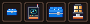
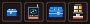
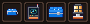
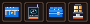
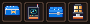
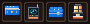
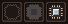
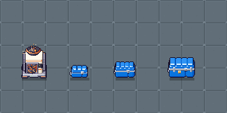
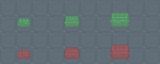

icon_chest (hoje, normal 16 slots)
loot_crate (mundo, 8×)
container_sealed (mundo)pendentes/, nada foi pra assets/sprites/.icon_chest (azul #0a74de / #2f93f4 / #055ec8, cinta cinza, contorno #1b1630); os ícones são versões reduzidas do loot_crate (tampa em gomos, cinta, trinco) e do container_sealed (4 gomos, duas cintas verticais, fecho dourado).Referência: o icon_chest atual ocupa 16×12 (baú normal). O simples fica menor (12 de largura), o grande ocupa o quadro todo com mais altura.
icon_chest (hoje, normal 16 slots)loot_crate (mundo, 8×)container_sealed (mundo)icon_chest_small_A 16×16icon_chest_small_B 16×16icon_chest_small_C 16×16A cinta cinza com trinco (o mais fiel ao loot_crate). B fecho dourado pequeno (lê "caixinha com tranca"; combina com o grande). C cinta com ponteiras laterais (a aba cinza do loot_crate saindo pros lados). Recomendo A: o trinco cinza é o que o loot_crate tem, e o dourado fica de marca do baú grande.



icon_chest_large_A 16×16icon_chest_large_B 16×16icon_chest_large_C 16×16A duas cintas verticais cinza e fecho dourado, o container_sealed em miniatura. B cintas finas, tampa mais arredondada, pezinhos. C cinta horizontal larga estilo aba do container, abas laterais e pezinhos. Recomendo A: é a que mais lê "container" ao lado do normal (cinta horizontal) no menu do construtor.



chip_slot_empty_A contorno do chip, miolo vaziochip_slot_empty_B máscara cheia, miolo mais fundoicon_chip (o item)Cinza translúcido (alpha 96, miolo de B alpha 70; é o único alpha intermediário, de propósito, como sombra de UI), sem o contorno escuro, pra não competir com item de verdade. Os pinos saem do próprio icon_chip. Em slot, 1× a 3× (A, B, chip real):

Recomendo B: A fica ralo em 1× (só um aro pontilhado); B lê "aqui entra um chip" mesmo no slot escuro.
Chão da base (base_floor), aquecedor como referência de máquina e os três baús com o pé no centro de baixo do tile (mesma âncora do chest), 2×:

Fantasma do construtor (aproximação: sprite tingido, verde = pode, vermelho = não pode; o jogo faz o tingimento dele, aqui é só pra checar a silhueta):

| sprite | tamanho | conteúdo (bbox) | observação |
|---|---|---|---|
loot_crate / _empty | 32×32 | 26×18 / 26×25, y 12–30 | cabe em 1 tile com folga de 3 px de cada lado |
chest / _open | 32×40 | 32×23 / 32×32, y 15–38 | preenche o tile exato |
container_sealed / _open | 40×44 | 40×29 / 40×38, y 13–42 | passa 4 px pra cada lado do tile |
container_open sobe até y=4 (38 px de altura útil, a tampa em pé cobre quase um tile acima) e chest_open até y=6. Aberto ao lado de parede/máquina atrás, a tampa cobre o que está no tile de cima; ok pro top-down 3/4, só lembrar de desenhar na ordem do pé.icon_chest_small e icon_chest_large (depois do ok, a versão escolhida perde o sufixo A/B/C). Mesmo uso do icon_chest: blit em (2,2) do ui_slot 20×20.chip_slot_empty: 16×16, mesmo encaixe em (2,2) do slot; desenhar só quando o slot de chip está vazio, com alpha da própria imagem.loot_crate(_empty), chest(_open) e container_sealed/container_open mantêm tamanho e âncora (pé no centro de baixo do tile).Gerado por tools/sprites/v06_m1_baus.py (determinístico).